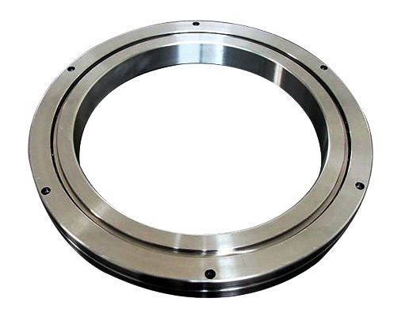
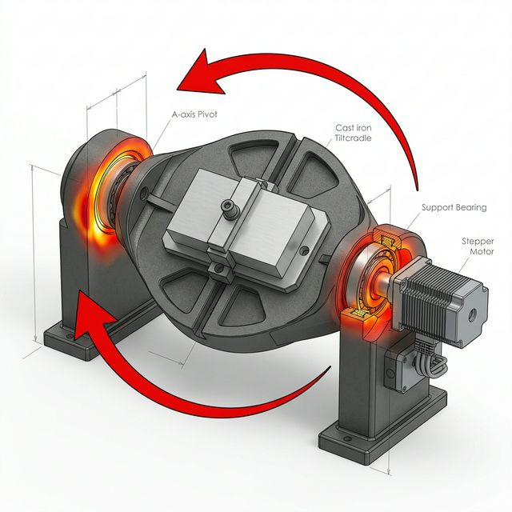
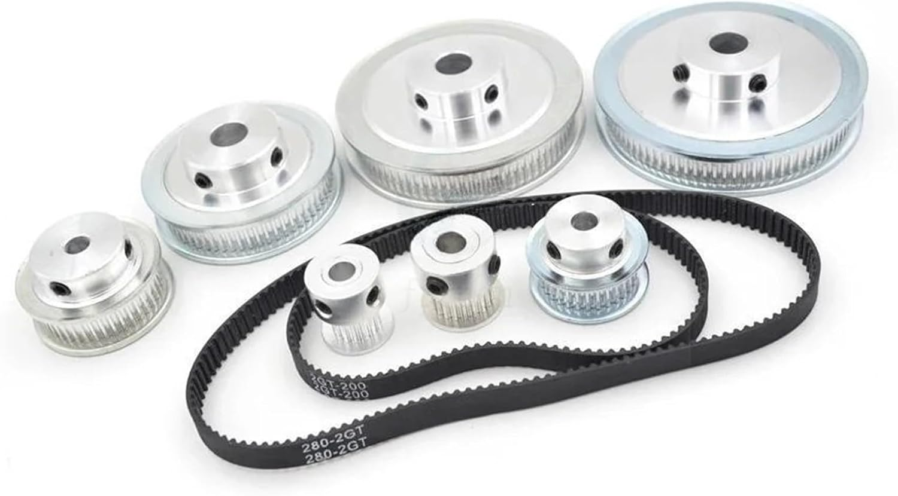
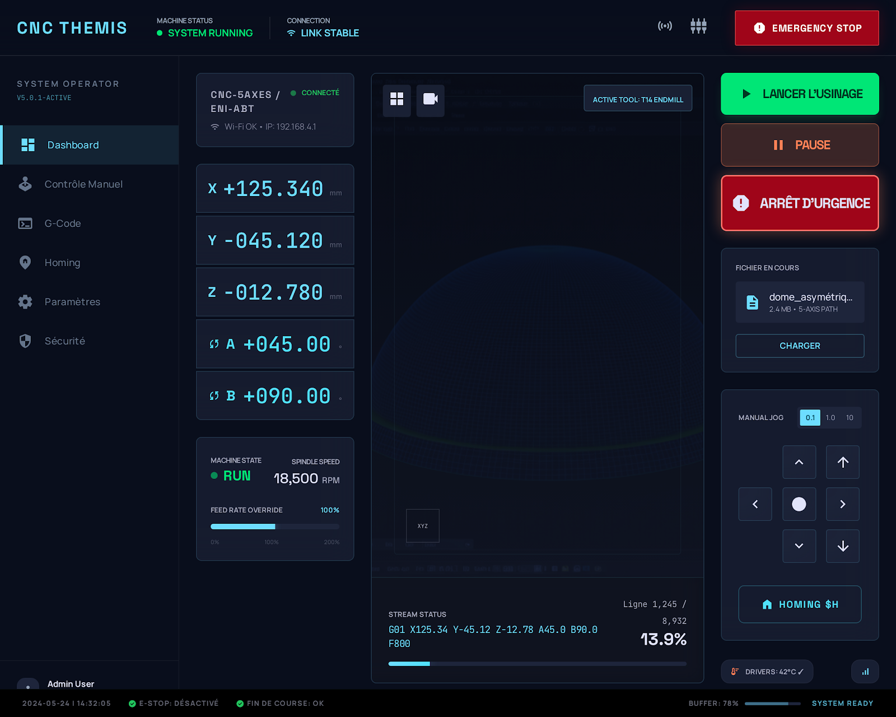
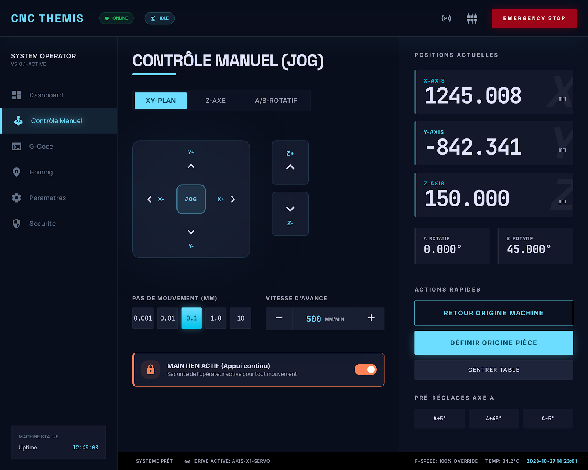
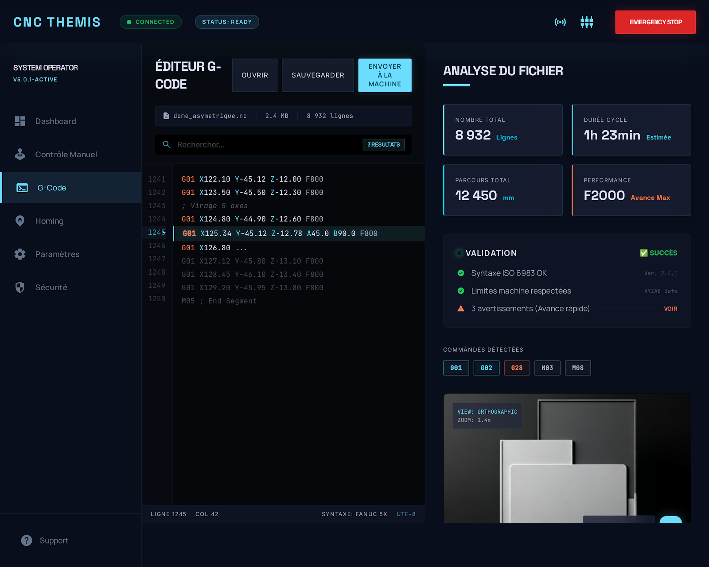

Configuration à berceau basculant pour rigidité optimale

(Appuyez sur la touche BAs ⬇️ pour voir l'analyse RDM)
Validation de la structure sous la charge de coupe (300W)


Architecture logicielle réactive avec Riverpod et UDP

Panneau Jog Haute Précision

Éditeur G-Code Analytique
